Open a skin
#- Open Cranamp. Select the lower-right corner of the top player window to open Settings. The circle marks that area.
- Choose Open Skin Studio.
- Select Continue editing to edit the working skin. To load a file, choose Open skin or project and select a
.wsz,.zipor.cstudiofile.

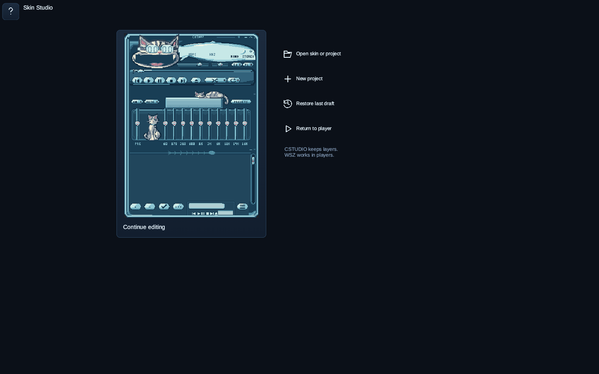
Keep an editable copy. A CSTUDIO file keeps paint layers. A WSZ file holds the finished player skin. Cancelling the file picker keeps the current document.
Start from a blank project
Choose New project on the project screen, then confirm Create blank project. This replaces the working document. Save your current project first.

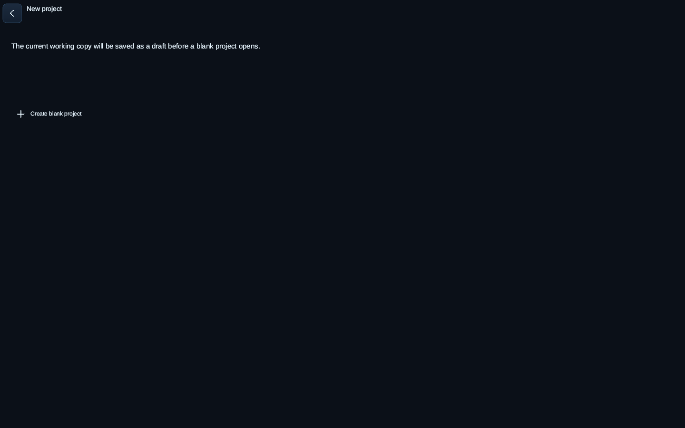
Choose what you edit
#Choose Canvas at the top of the editor. Joined canvas shows the player windows together. Select a window in Skin windows for a closer view. Select a file in Source bitmaps to edit its sheet directly.

Move and zoom
- Use Pan canvas, the hand icon, to drag without painting.
- Use two fingers to pan or pinch to zoom. A second finger cancels a tentative stroke.
- Use the plus and minus zoom controls. Fit canvas, between them, shows the whole selected part.
- Scroll with the wheel, middle-button drag or the canvas scrollbars. Ctrl + wheel zooms around the pointer.
Find the same controls on a phone
The top icons select Canvas, Sprites, States, Skin and Preview. Drawing tools and quick settings sit below the canvas. Select the current part name to change the part. The sliders icon opens the selected tool’s full settings.
On a wider window, the part list and tool properties appear beside the canvas. Layouts follow window width on every platform.
Phone and tablet layouts

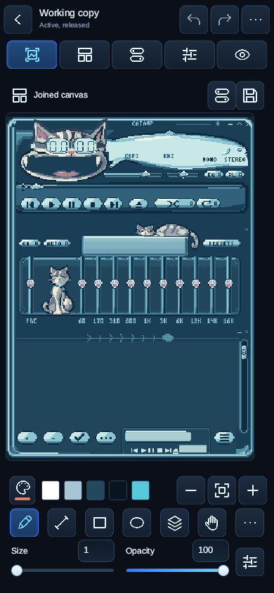

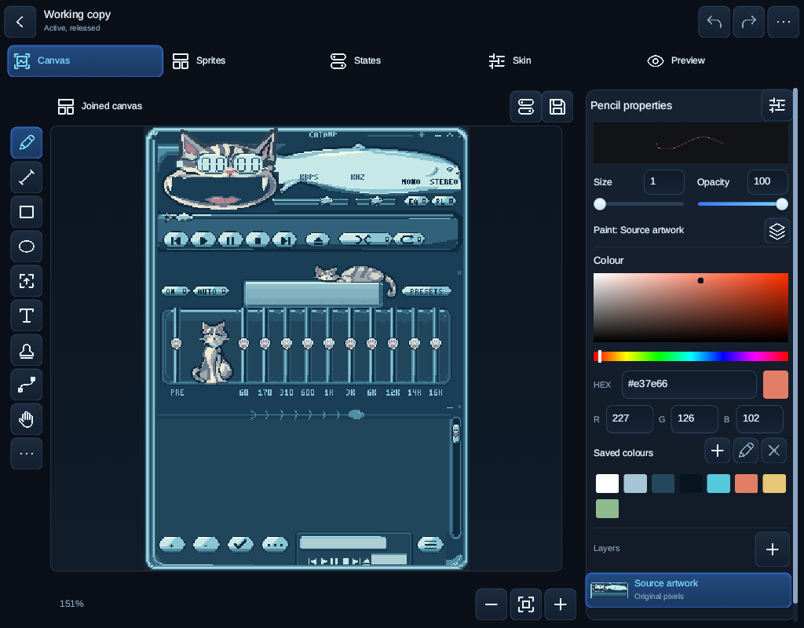
Draw with the selected tool
#- Select a tool beside or below the canvas. Use Drawing tools, the three-dot control in the tool strip, to see tools that do not fit in the strip.
- Set the properties for that tool. The small sample shows the current stroke or shape. Open Tool settings with the sliders icon for more controls.
- Draw on the canvas. Use Undo in the top bar to remove the last edit. Redo restores it.
Find a tool in Drawing tools

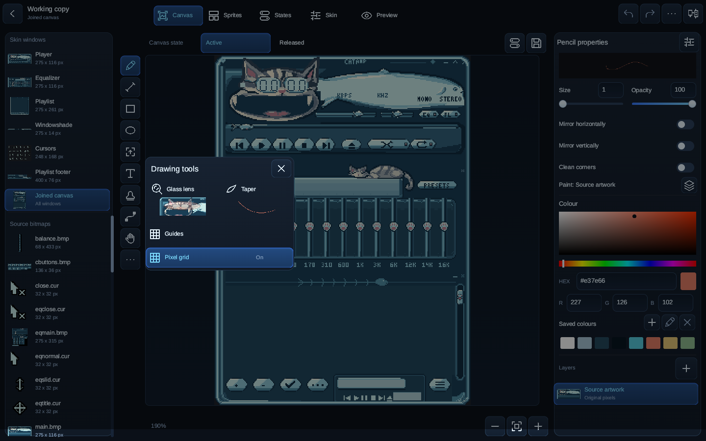
Open a tool below for its steps and a screenshot of its settings.
Pencil
Choose Pencil. Set Size in skin pixels and Opacity, then drag to draw. Size 1 paints a one-pixel stroke.
The full settings include mirroring and grain. Clean corners changes how diagonal strokes meet.

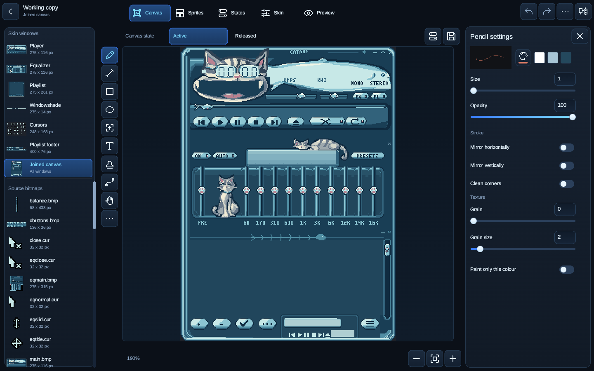
Line
Choose Line. Set Size and Opacity, then drag from the start point to the end point. Release to keep the line.
A completed drag creates one undo step.

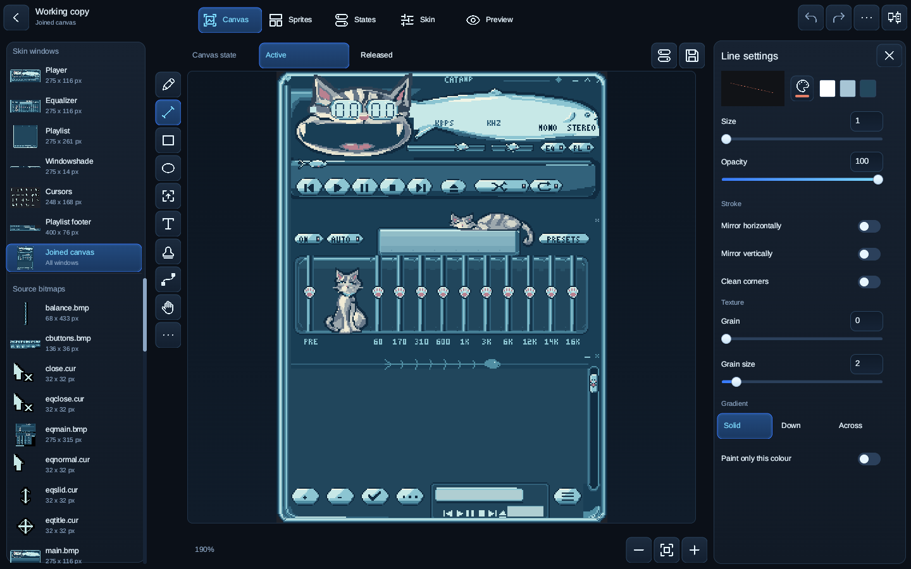
Rectangle
Choose Rectangle and drag between opposite corners. Turn Fill shape on for a filled rectangle; turn it off for an outline.
For a gradient, choose Down or Across and enter the end colour in To. Solid uses the current brush colour.

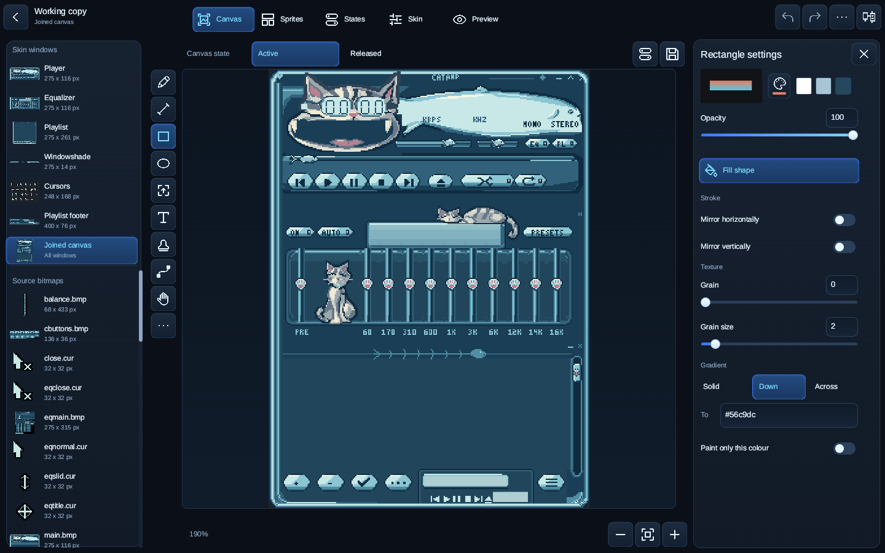
Ellipse
Choose Ellipse and drag the bounding rectangle. Set Fill shape for a filled ellipse or use an outline.
The gradient controls work like the Rectangle tool. The sample at the top shows the current settings.

Curve
Choose Curve. Set Size and Bend, then drag between the endpoints. Change the sign of Bend to curve in the other direction.
Review the curve while dragging. Release to keep it.

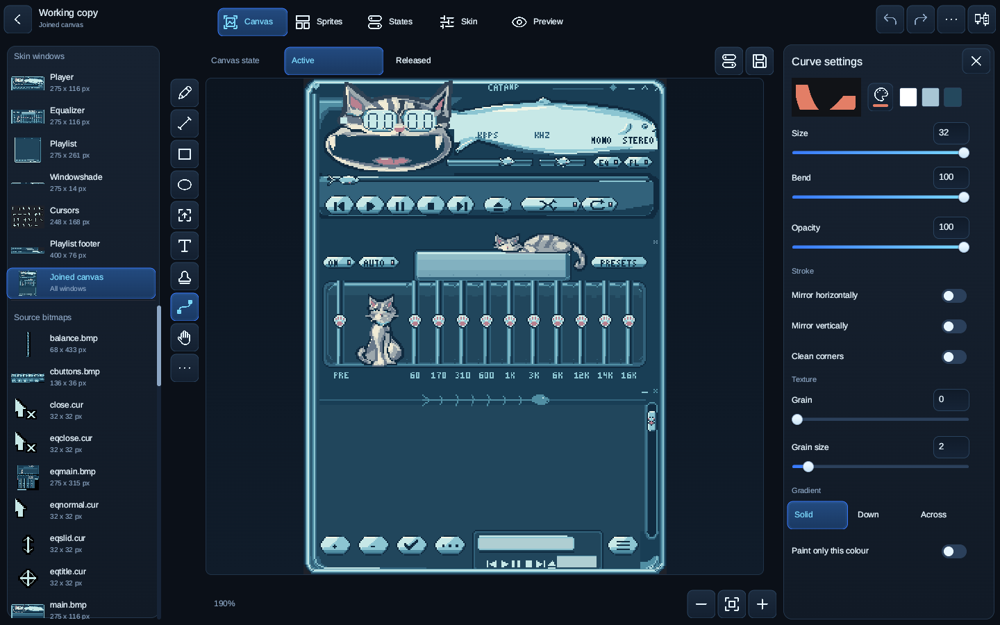
Text
Choose Text. Enter the words in the Text field and set the text scale. Open the tool settings to choose the font and spacing, then drag to place the text.
The text becomes painted pixels. Put it on its own layer so you can remove or replace it later. Changing the text field affects the next placement.

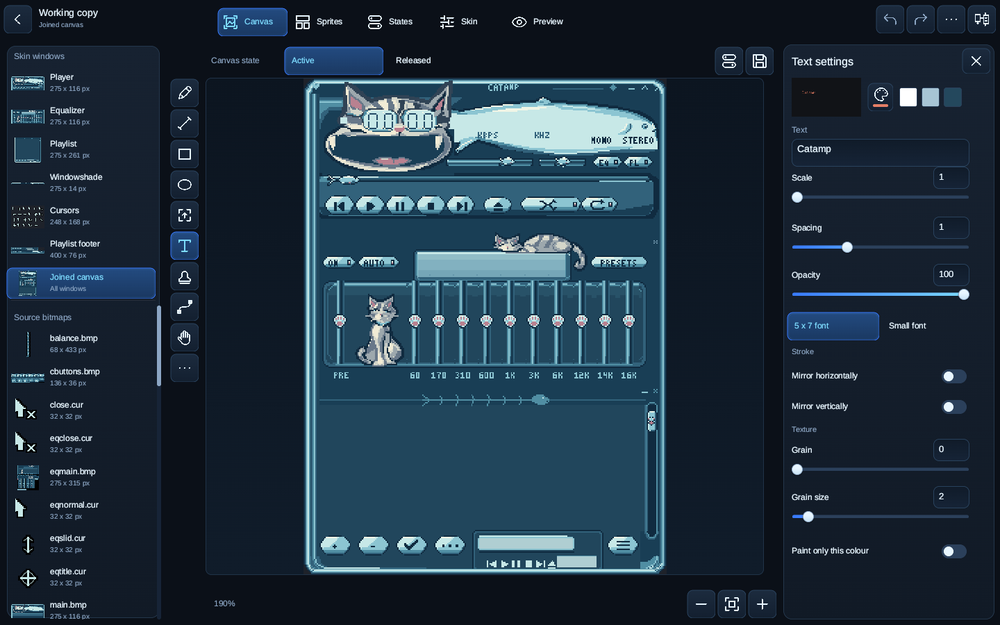
Lift pixels
Choose Lift pixels and drag a rectangle around the artwork to copy. The original pixels stay in place. Select Use copied pixels to switch to Stamp.
The captured rectangle appears in the tool preview. This copies rendered artwork into a stamp.

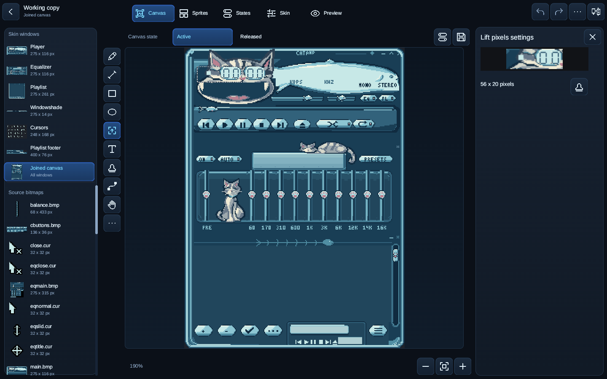
Stamp
Capture a rectangle with Lift pixels, then choose Stamp. Set the flip or rotation controls and drag to place the copy.
Repeat places several copies along the drag. Sweep states distributes repeated stamps through sprite states; leave it off for ordinary copying.

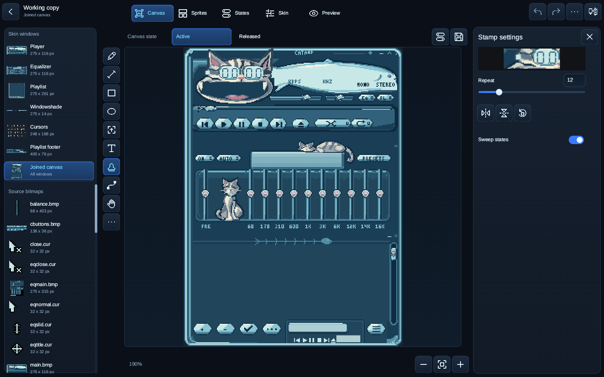
Glass lens
Choose Glass lens. Set Bevel and Refraction, then drag a rectangle over the artwork.
Use the tool sample to check the effect and Undo to remove a placement.

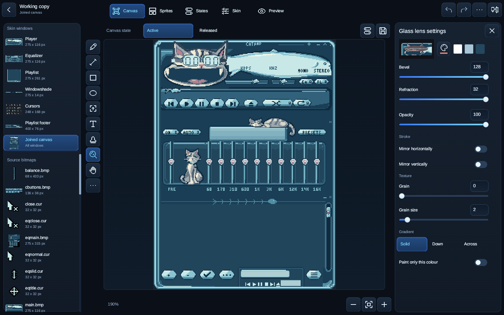
Taper
Choose Taper. Set Size and Grain, then drag between the stroke endpoints.
Adjust Grain size for the texture. The sample updates as you change the settings.

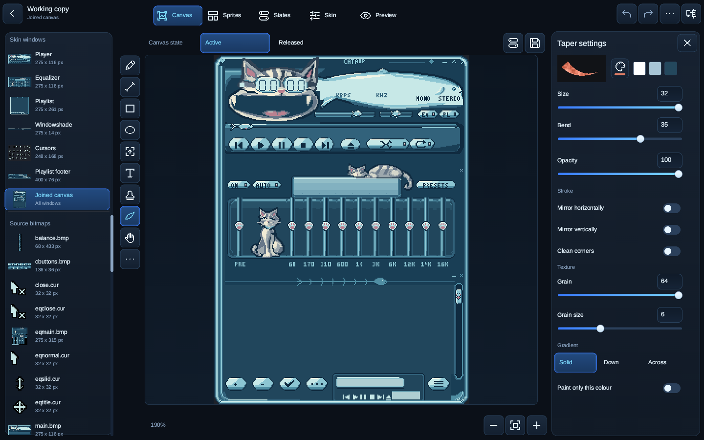
Brush settings affect new strokes. To change an existing shape, undo it and draw it again, or edit its pixels on a separate paint layer.
Choose and save a brush colour
#- Select the palette icon, Brush colour. Wide windows also show the colour editor beside the canvas.
- Choose a hue and a point in the colour field, or enter an exact HEX value such as
#4a80c2. RGB fields accept values from 0 to 255. - Use Save colour, the plus icon, to add the current colour to Saved colours. To replace a swatch, select it, choose a new colour, then use Replace swatch, the pencil icon. The cross removes the selected swatch.

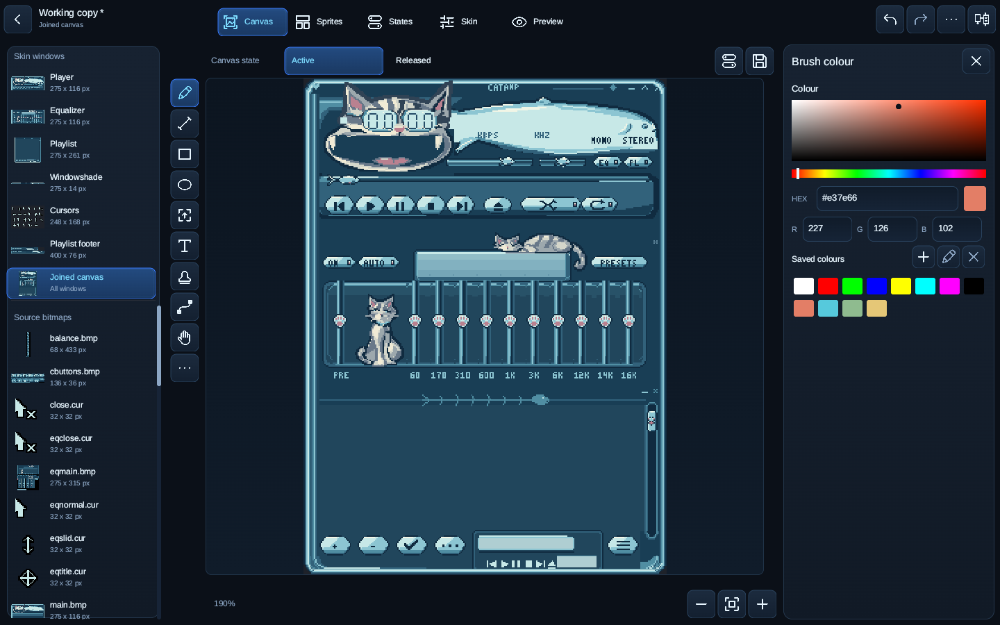
Right-click on the canvas to sample a colour from the artwork. Save a CSTUDIO project to retain the palette.
Brush colour on a phone

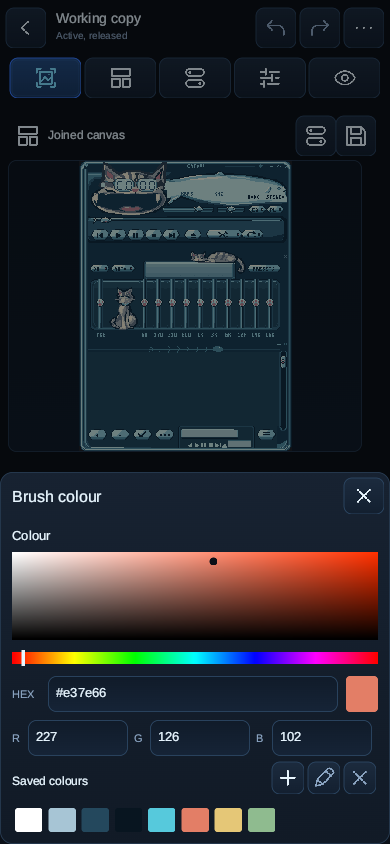
Keep changes on paint layers
#- Open Painting layers with the stacked-sheets icon. Select the plus button to add a layer.
- Select the layer row before drawing. Its name appears beside Paint. The Source artwork row edits the original bitmap pixels directly.
- Use the eye to show or hide a layer and the lock to prevent edits. Select a layer to change its name or opacity. The arrows change its order.

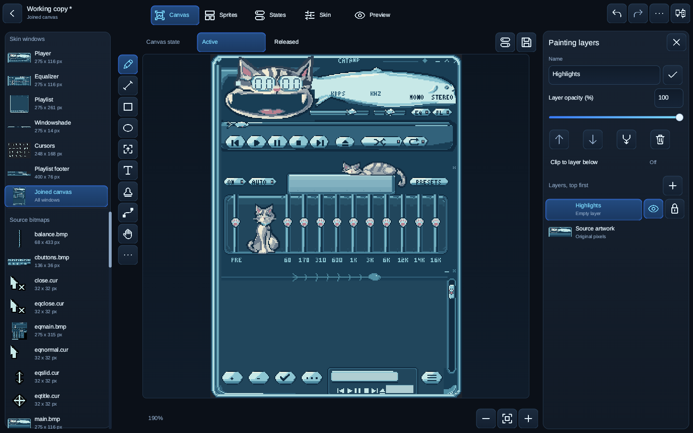
Merge down combines the selected layer with the layer below. Delete removes it. Undo can restore either action during the current session. Save as CSTUDIO to keep layers for later work.
Limit where new paint can land
In Tool settings, Lock transparency limits paint to existing pixels on the selected paint layer. Paint only this colour restricts painting to matching pixels. In Painting layers, Clip to layer below uses the layer below as a mask.

If a stroke produces no visible change, check the selected layer, its eye and lock controls, and these paint limits.
Edit sprites and their states
#Choose a control
Open Sprites and select the control to edit. A sprite is a skin image for a control, such as the Play button or a slider handle. The selected control limits the destination of new paint.

Choose what you see and what you paint
- Use Active or Inactive above the canvas to choose the window appearance. Released or Pressed chooses the button appearance. Open Canvas state with the two-state icon near those controls.
- Under Paint into, choose This state to change the displayed variant. Choose All states when the same edit should reach every variant.
Check both selections before drawing. Viewing a pressed button does not limit painting to its pressed artwork. The Paint into setting controls that scope.

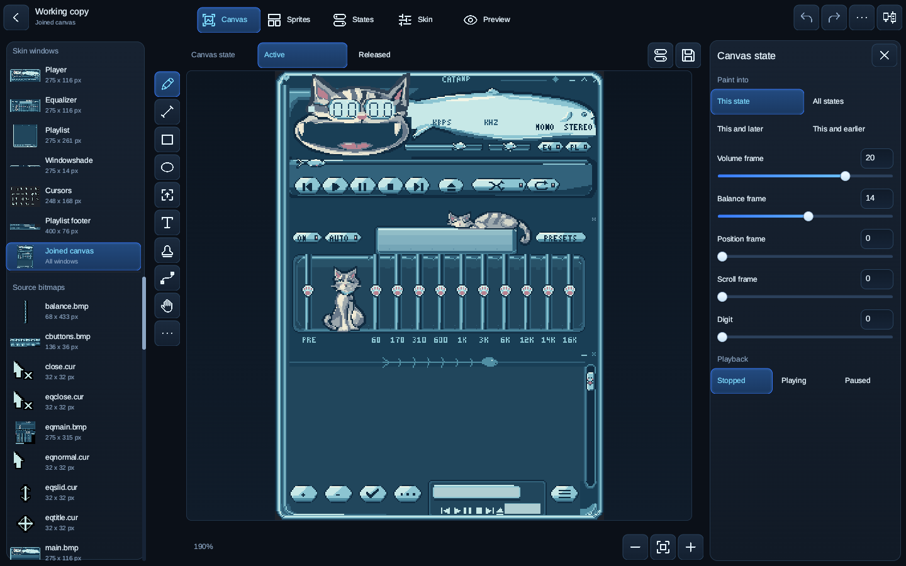
Other window and button appearances

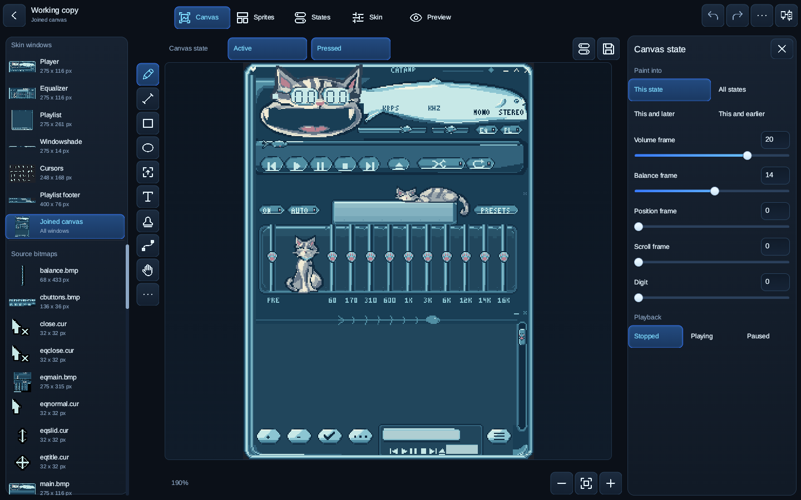

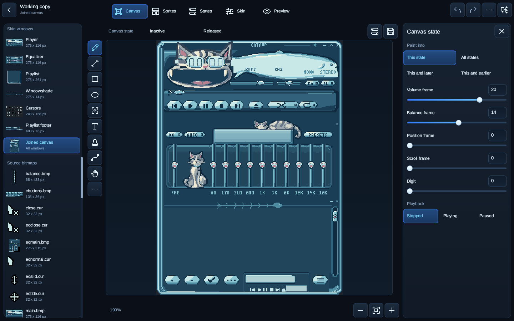

Compare the variants
Open States to inspect the selected control’s artwork side by side. Check both button appearances. For sliders, inspect the low, middle and high positions before export.

Inspect equalizer frames
Open Project actions, then EQ workbench. Choose a level under Level to paint and inspect its track and handle artwork. The equalizer uses shared source images, so an edit can affect several sliders.

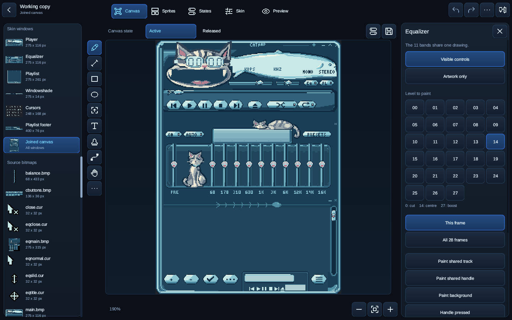
Change playlist and visualizer colours
#- Open Skin, then Colours.
- Select the playlist item you want to change, such as Track text or Background. Enter its HEX or RGB value, or use the colour field.
- Select a visualizer swatch to change that slot. Check the playlist text samples and the visualizer preview.

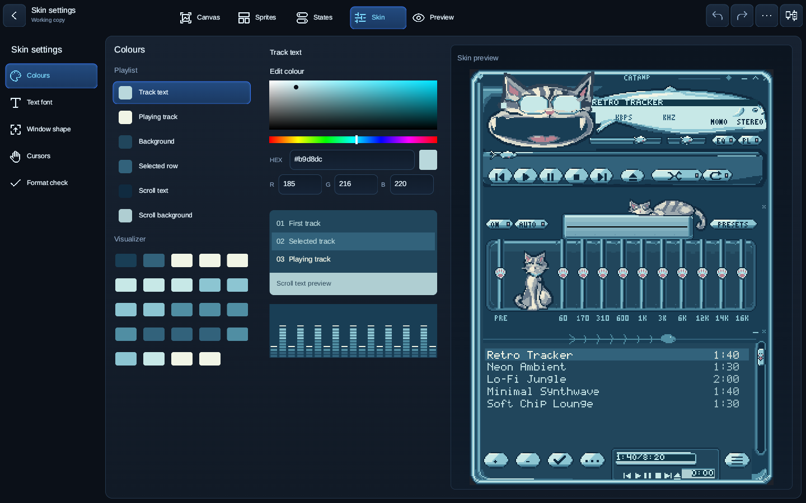
These settings control the playlist’s filled area and runtime text. Drawing on the canvas changes bitmap artwork. Use this screen when you want to change the playlist background or text colour.
Visualizer colours on a phone
Open Skin, then Colours and choose Visualizer. Select a palette slot and set its colour.

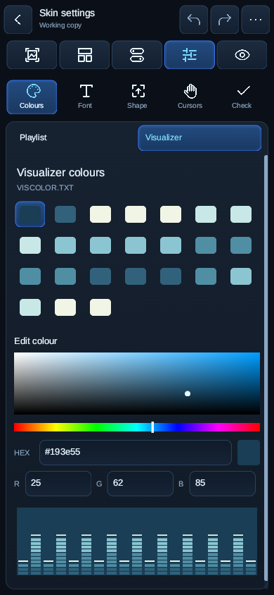
Edit the font, window shape or cursors
#Open Skin to reach these settings. Each has its own preview.
Player text font
Choose Text font. Set Font ink and Font background, then select Build classic text font. Use Edit font pixels to paint the bitmap letters directly. This changes the player’s font; the Text drawing tool places words on the artwork.

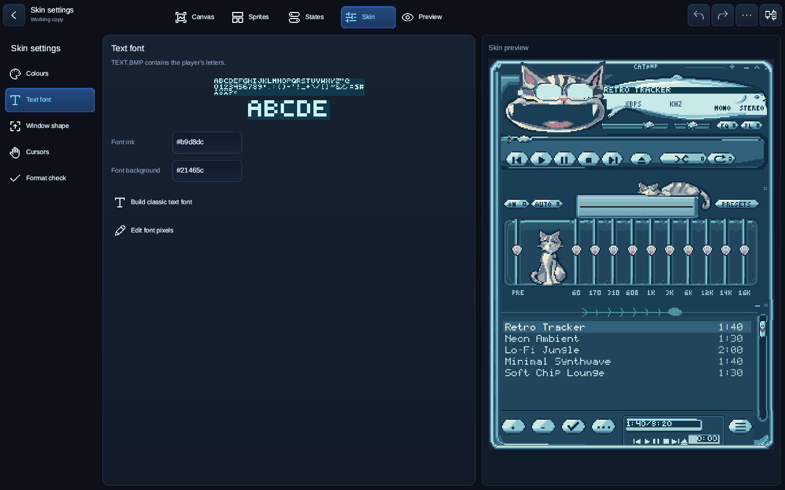
Window shape
Choose Window shape. Set Cutout colour to the colour along the outside edge, then select Cut edge for the player or equalizer. Reset restores that window’s rectangular shape.

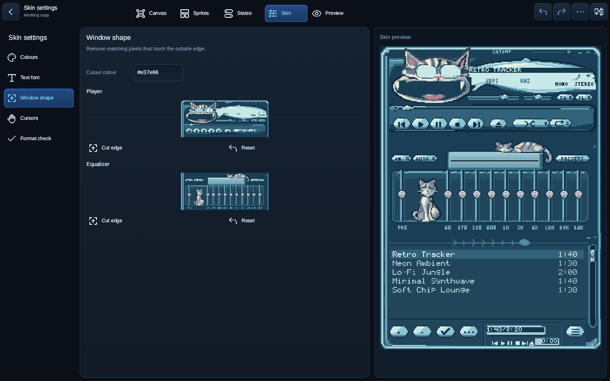
The cutout affects the whole window, including any controls inside it. Magenta is ordinary artwork colour; it does not create a transparent hole in a sprite.
Cursor artwork and click position
Choose Cursors and select the cursor for a player region. Cursor X and Cursor Y set its hotspot: the pixel that acts as the click position. Choose Paint cursor to edit its artwork. If entries are missing, use Draw missing cursors to create them.

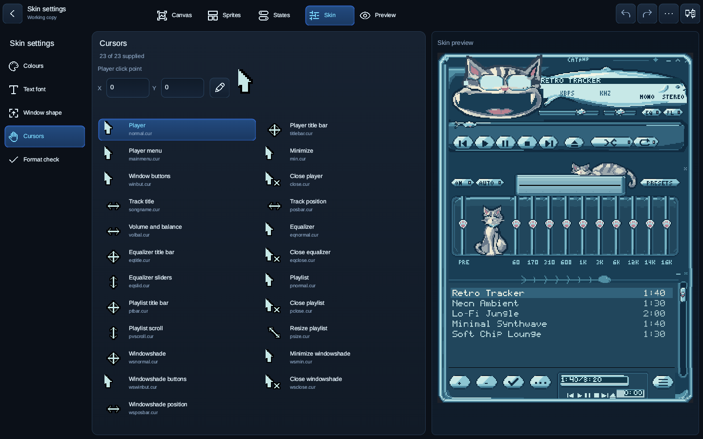
Cursor display depends on the platform and input device. Touch input has no pointer to display.
Preview and check the skin
#- Open Preview to see the skin rendered as a player.
- On desktop, select a thumbnail under State previews to inspect an alternate appearance. On smaller screens, use Pressed controls and Active window.
- Look for hard-to-read text and mismatched backgrounds around moving controls. Return to Canvas or Skin to make corrections.

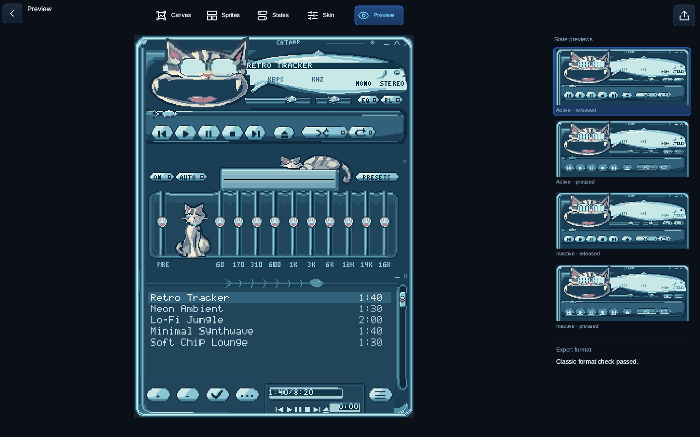
Check the exported format
Open Skin, then Format check. Resolve reported problems before exporting a WSZ. A valid format does not confirm that the artwork looks correct, so inspect the preview as well.

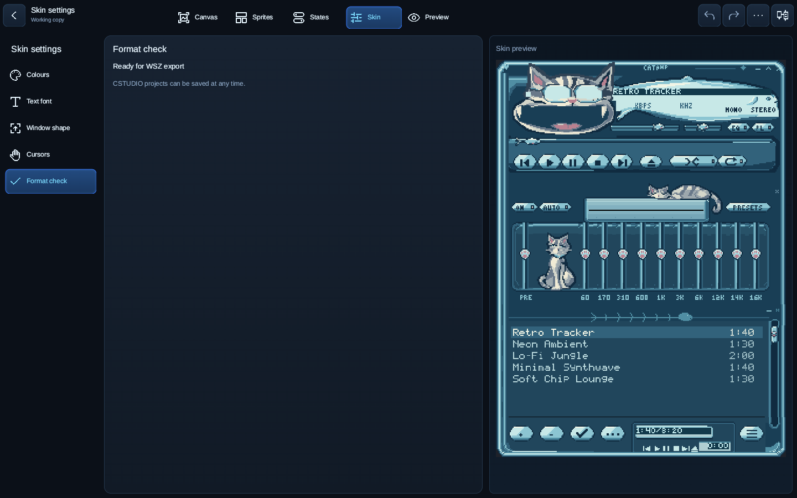
Inspect a small group of pixels
Use Lift pixels to select an area, then open Project actions and choose Pixel study. Inspect the enlarged pixels in Color or Values mode. Include 4px surroundings adds context around the selection. Without a selection, the preview starts at the top-left.

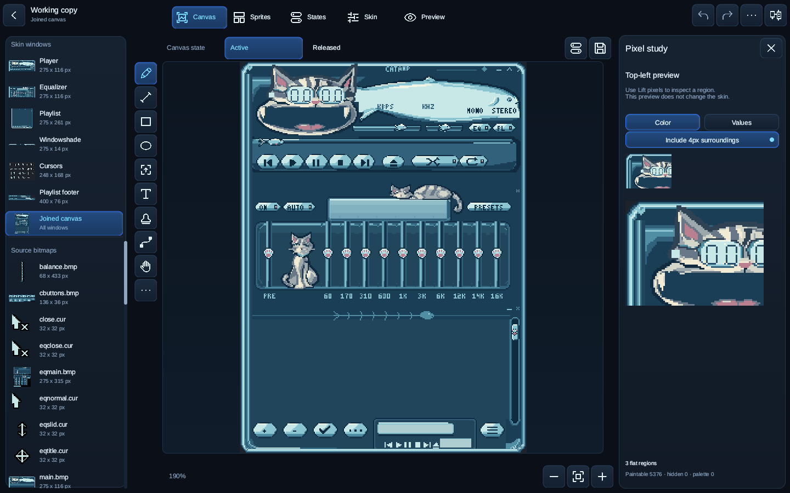
Save the project and export a skin
#Select the save icon beside the canvas to open Save and share. You can also open Preview and select its share icon at the top-right.

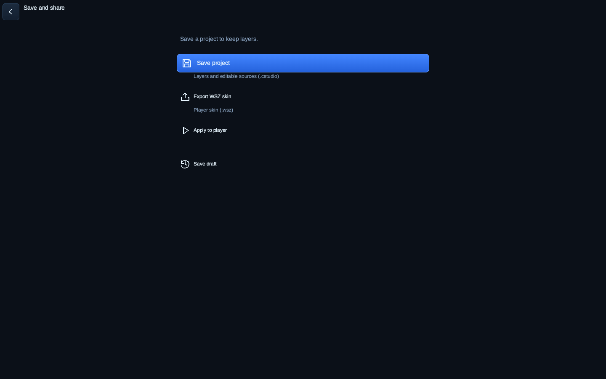
- Save project
- Writes a
.cstudiofile with layers and editable sources. Use this file when you want to continue editing. - Export WSZ skin
- Writes a
.wszfile for a player. Visible artwork is combined into the classic skin files. - Apply to player
- Uses the current skin in Cranamp when Studio was opened from the player. Save a project separately to keep your editable work.
- Save draft
- Keeps a recovery copy on this device. Return to the project screen and use Restore last draft to reopen it.
To test an exported WSZ, return to the player and open that skin file. Keep the CSTUDIO file for future edits. Browser exports download files; native apps use the system file picker.
Find inspection tools from the canvas
The three dots in the top bar open Project actions. This panel contains Edit history and Pixel study. It also provides Sprite rectangles and the EQ workbench.

Connect an agent on desktop
#MCP lets a compatible agent use Studio’s drawing tools and edit history. It is available in desktop builds and is off by default. Android, iOS and the web do not include it.
- Open Agent connection from the top toolbar. In a narrow desktop window, find it in Project actions.
- Select Start server. Copy the HTTP server URL to your agent’s MCP settings. It is a localhost address on this computer.
- Select Test connection. Stop the server or close Studio when you finish.

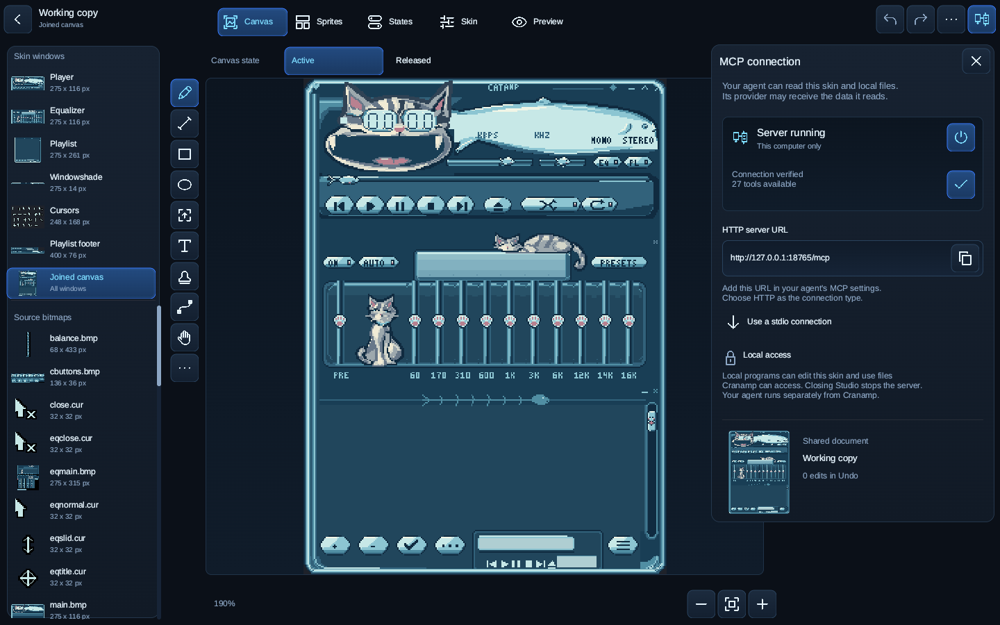
While the server runs, connected programs can read or change the active skin and access files within Cranamp’s permissions. An agent may send the data it reads to its provider.